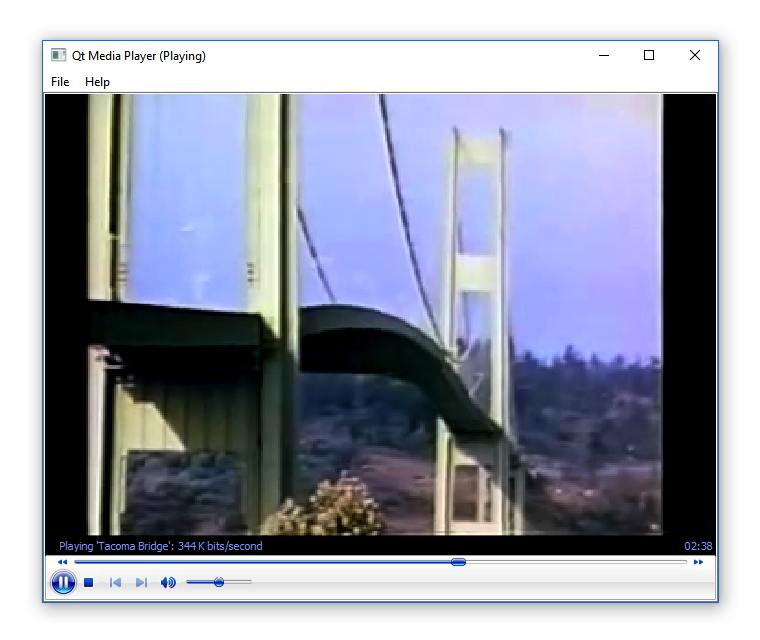

Media Player Example (ActiveQt)
The Media Player example uses the Microsoft Media Player ActiveX control to implement a functional media player application.

Media Player demonstrates how a Qt application can communicate with embedded ActiveX controls using signals, slots, and the dynamicCall() function.
class MainWindow : public QMainWindow { Q_OBJECT public: MainWindow(); ~MainWindow(); void openMedia(const QString &mediaUrl); public slots: void on_mediaPlayer_PlayStateChange(int newState); void on_actionOpen_triggered(); void on_actionExit_triggered(); void on_actionAbout_triggered(); void on_actionAboutQt_triggered(); private: void updateWindowTitle(const QString &state); Ui::MainWindow m_ui; };
The MainWindow class declares a QMainWindow based user interface, using the Ui::MainWindow class created by Qt Designer. A number of slots are implemented to handle events from user interface elements, including the mediaPlayer object, which is a QAxWidget hosting the Microsoft Media Player ActiveX control.
MainWindow::MainWindow() { m_ui.setupUi(this); QSettings settings(QSettings::IniFormat, QSettings::UserScope, QCoreApplication::organizationName(), QCoreApplication::applicationName()); const QByteArray restoredGeometry = settings.value(QLatin1String(geometryKey)).toByteArray(); if (restoredGeometry.isEmpty() || !restoreGeometry(restoredGeometry)) { const QRect availableGeometry = QApplication::desktop()->availableGeometry(this); const QSize size = (availableGeometry.size() * 4) / 5; resize(size); move(availableGeometry.center() - QPoint(size.width(), size.height()) / 2); } m_ui.mediaPlayer->dynamicCall("enableContextMenu", false); m_ui.mediaPlayer->dynamicCall("stretchToFit", true); updateWindowTitle(""); }
The constructor initializes the user interface, restores a previously saved window geometry, and uses the dynamicCall() function to invoke the APIs implemented by the Microsoft Media Player ActiveX control, to set initial configuration parameters.
void MainWindow::on_mediaPlayer_PlayStateChange(int newState) { static const QHash<int, const char *> stateMapping { {1, "Stopped"}, {2, "Paused"}, {3, "Playing"}, {4, "Scanning Forwards"}, {5, "Scanning Backwards"}, {6, "Buffering"}, {7, "Waiting"}, {8, "Media Ended"}, {9, "Transitioning"}, {10, "Ready"}, {11, "Reconnecting"}, }; const char *stateStr = stateMapping.value(newState, ""); updateWindowTitle(tr(stateStr)); }
The on_mediaPlayer_PlayStateChange slot handles the signal emitted by the mediaPlayer object when its state changes.
void MainWindow::openMedia(const QString &mediaUrl) { if (!mediaUrl.isEmpty()) m_ui.mediaPlayer->dynamicCall("URL", mediaUrl); }
The openMedia() function allows a media file to be opened by using the dynamicCall() function to set the URL property in the ActiveX control, which causes the media file to be loaded and played.
int main(int argc, char *argv[]) { QApplication::setAttribute(Qt::AA_EnableHighDpiScaling); QApplication app(argc, argv); QCoreApplication::setApplicationVersion(QT_VERSION_STR); QCoreApplication::setApplicationName(QLatin1String("Active Qt Media Player")); QCoreApplication::setOrganizationName(QLatin1String("QtProject")); MainWindow w; QCommandLineParser parser; parser.setApplicationDescription(QCoreApplication::applicationName()); parser.addHelpOption(); parser.addVersionOption(); parser.addPositionalArgument("file", "The media file to open."); parser.process(app); if (!parser.positionalArguments().isEmpty()) w.openMedia(parser.positionalArguments().constFirst()); w.show(); return app.exec(); }
The main() function starts the application using standard Qt APIs and uses an optional command line argument as the name of a media file to be loaded by the player.
To build the example, you must first build the QAxContainer library. Then run your make tool in examples/activeqt/mediaplayer and run the resulting mediaplayer.exe.